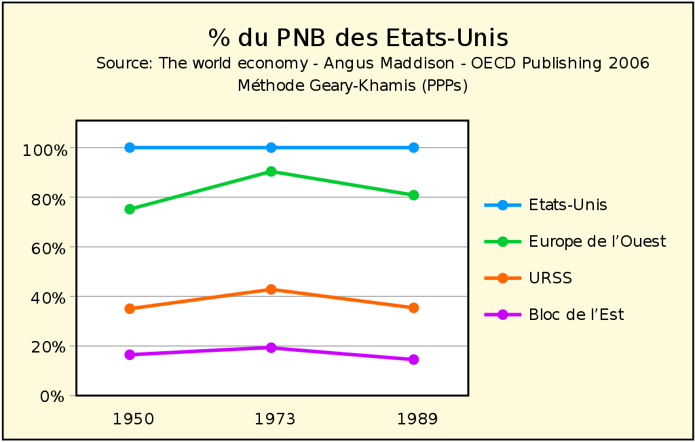

À partir de 1928, au prix d'un effort d'investissement colossal, les plans quinquennaux construisirent rapidement une base d'industrie lourde dans une économie principalement agraire sans attendre l’accumulation du capital à travers l’expansion de l'industrie légère, et sans dépendre du financement extérieur. Le pays devient industrialisé à un rythme extrêmement rapide, surpassant peut-être le rythme de l'Allemagne au XIXe siècle et le Japon au début du XXe siècle.
| 1928 | 1930 | 1933 | 1936 | 1938 |
|---|---|---|---|---|
| 8% | 20% | 5% | 30% | 8% |
En 1950, le PIB américain est de 1 455 milliards de dollars Geary-Khamis dit dollars internationaux soit 27,3 % du PIB mondial, le suivant le plus proche est l'Union soviétique qui avec 510 milliards de dollars qui produit 9,6 % du PIB mondial.
La croissance déclina dans les années 1960. La prolétarisation des paysans se terminait. La découverte de nouveaux gisements de matières premières était plus rare. Cependant les ministères de planification ne relâchèrent pas leur contrôle sur le niveau des entreprises alors que l'économie connut une stagnation prolongée dans les années 1970 et 1980. En 1970, le PNB est de 1 513 milliards dollars internationaux soit 9,4 % du PIB mondial.
Les statistiques impressionnantes de production ne reflétèrent jamais une amélioration comparable du niveau de vie de la population, du fait des pénuries, le secteur de la consommation demeurant toujours secondaire. En effet, il faut attendre une dizaine d'années pour recevoir une voiture qu'on a commandée, quand on a les moyens d'en acheter une. Le poids politique et économique du complexe militaro-industriel faisait que ce secteur restait prioritaire.
Alors que l'économie croissait, le volume de décisions à prendre par les planificateurs de Moscou devint énorme. Les lourdes procédures de l'administration bureaucratique ne permettaient pas de communication libre et une réponse flexible requises au niveau des entreprises pour gérer les revendications salariales, l'innovation, les clients et les fournisseurs.
En 1994, le conseiller scientifique de Gorbatchev, Roald Sagdeev, écrivit que l'URSS avait un retard de 15 ans sur les standards occidentaux concernant l'électronique, le meilleur indicateur étant l'absence de superordinateur conçus et fabriqués localement malgré l'énorme espionnage effectué à l'étranger par les services de renseignement soviétiques.
Les problèmes économiques de l'URSS furent un des facteurs qui provoquèrent son éclatement, en 1991.
Pour plus d'informations veuillez vous rendre ici
